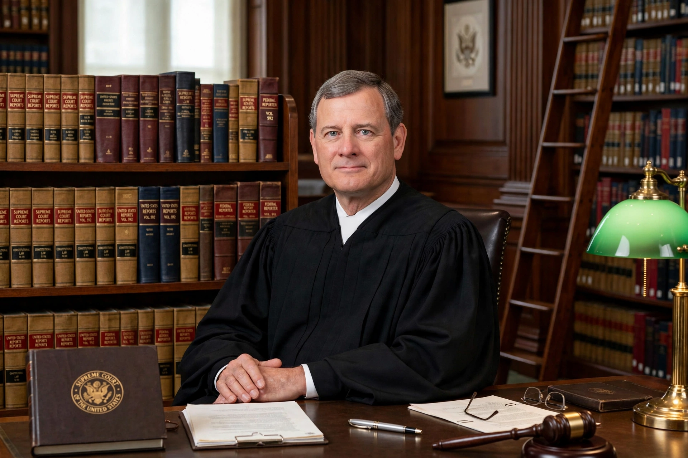

| John Roberts | |
|---|---|
| Office | 17th Chief Justice of the United States |
| Assumed office | 29 September 2005 |
| Nominated by | George W. Bush |
| Preceded by | William Rehnquist |
| Born | 27 January 1955, Buffalo, New York, U.S. |
| Education | Harvard University (AB, JD) |

John Glover Roberts Jr. (born January 27, 1955) is an American jurist who has served since 2005 as the 17th chief justice of the United States. Raised in Indiana, Roberts graduated from Harvard College and Harvard Law School, clerked for Judge Henry Friendly and for Justice William Rehnquist, and served in the administrations of Presidents Ronald Reagan and George H. W. Bush before a successful career in appellate practice. In 2003 he became a judge of the D.C. Circuit.
President George W. Bush first nominated Roberts to succeed Justice Sandra Day O'Connor in July 2005; after Chief Justice Rehnquist's death, Bush renominated him for chief justice, and the Senate confirmed him 78–22. As chief justice, Roberts has emphasised institutional legitimacy and, at times, narrow, incremental rulings. He wrote the majority opinion in NFIB v. Sebelius (2012), upholding the Affordable Care Act's individual mandate as a tax, and in Rucho v. Common Cause (2019) on partisan gerrymandering. He also presided over the first impeachment trial of President Donald Trump in 2020, and wrote the 2024 majority opinion in Trump v. United States on presidential immunity. Associate Justice Elena Kagan joined the Court during his tenure as chief.